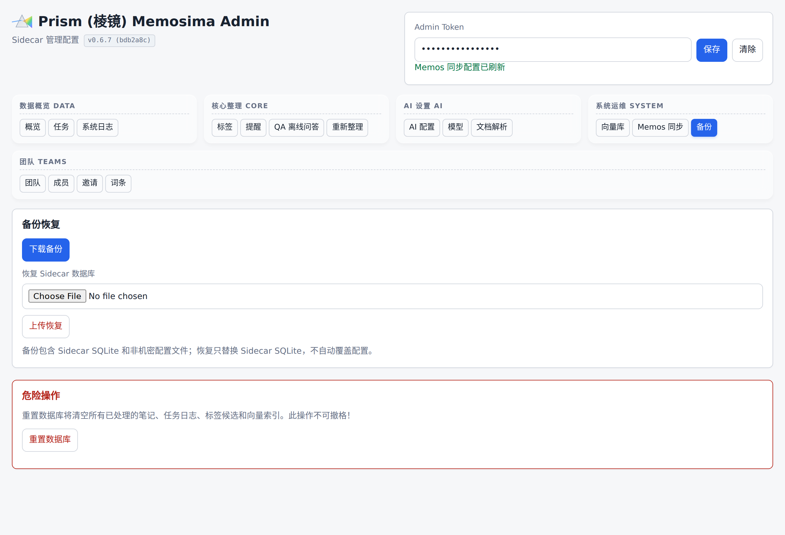

个人 AI 知识库系统开发计划与验收标准
1. 交付原则
- 每个阶段必须有可运行产物。
- 所有代码完成标准是真实测试通过。
- 更新代码时同步更新架构、设计和使用说明文档。
- Git 提交使用中文，并按独立功能点详细说明提交内容。
- 不覆盖原始 memo，AI 产物以新 memo 形式创建并关联来源。
2. 阶段总览
| 阶段 | 周期 | 目标 |
|---|---|---|
| P0 | 1-2 天 | 技术探针与项目骨架 |
| P1 | 第 1 周 | Memos 联调与任务系统 |
| P2 | 第 2 周 | AI 整理、标签审核、澄清 |
| P3 | 第 3 周 | 附件解析、索引、简单问答 |
| P4 | 第 4 周 | 自动文档、版本、备份恢复 |
| P5 | 第 5 周可选 | 稳定性、文档、部署验收 |
3. P0：技术探针与项目骨架
3.1 目标
确认 Memos 当前版本 API、Webhook、评论、附件下载、memo 创建和关联能力，建立项目基础结构。
3.2 任务
- 初始化代码仓库。
- 创建 Docker Compose，并提供 Caddy 统一入口网关。
- 固定 Memos 镜像版本。
- 启动本地 Memos 实例。
- 创建测试账号和 API token。
- 配置 Memos webhook。
- 验证 webhook payload。
- 验证创建 memo、读取 memo、创建评论、新建 memo、资源下载。
- 创建项目目录结构。
- 创建基础配置文件示例。
3.3 验收标准
- 可以在 NAS/Linux 或本机 Linux 环境启动 Memos。
- Sidecar 能收到真实 Memos webhook。
- Sidecar 能通过 API 读取 memo。
- Sidecar 能创建测试评论或测试 memo。
- API 探针结果记录到开发文档。
3.4 真实测试
手动创建一条 Memos memo
-> webhook 到达 Sidecar
-> Sidecar 拉取 memo 详情
-> Sidecar 创建一条测试评论
4. P1：Memos 联调与任务系统
4.1 目标
实现可重试、可观测、幂等的后台任务框架。
4.2 任务
- 实现 FastAPI 应用。
- 实现 Memos Client。
- 实现 SQLite 数据库迁移。
- 实现 jobs 表和 worker 轮询。
- 实现 webhook 幂等处理。
- 实现任务状态流转。
- 实现日志与错误记录。
- 实现健康检查接口。
4.3 验收标准
- webhook 接收后快速返回。
- 后台 worker 能异步处理 memo。
- 同一 webhook 重复发送不会重复创建任务。
- 失败任务记录错误并可重试。
- 任务状态可查询。
4.4 真实测试
连续创建 3 条 memo
-> 产生 3 个 process_memo 任务
-> worker 全部处理成功
-> 重放同一个 webhook 不产生重复结果
5. P2：AI 整理、标签审核、澄清
5.1 目标
完成从原始 memo 到 AI 整理 memo 的闭环，支持受控标签树和待审核新标签。
5.2 任务
- 实现 LLM provider 配置。OpenAI-compatible provider 已完成。
- 支持 OpenRouter、Qwen、DeepSeek、自定义 endpoint。当前配置已支持同类 OpenAI-compatible endpoint。
- 设计 AI 整理 Prompt 与 JSON 输出 schema。已完成基础 schema。
- 实现输出校验与失败重试。JSON 输出校验已完成，失败重试沿用任务重试机制。
- 实现标签树加载。
- 实现别名映射和禁用词校验。
- 实现候选标签创建。
- 实现候选标签审核 API。
- 实现 AI 整理 memo 创建。已支持本地模板版和 OpenAI-compatible LLM 版。
- 实现原始 memo 与 AI memo 关联。已支持 Sidecar 本地来源关联和 Memos 原生
REFERENCErelation。 - 实现待澄清判断和评论追问。本地规则版已完成，任务会进入
waiting_user。
5.3 验收标准
- 原始 memo 不被覆盖。
- AI 整理结果新建为 memo。当前已支持本地模板和 LLM JSON 草案两种来源。
- AI 整理 memo 包含
#系统/AI整理。当前已通过自动化测试。 - 已有标签被优先使用。
- 新标签进入 candidate 状态。
- 审核通过后标签进入 active 状态。当前已写入 Sidecar
business_tags表，并被 worker 后续处理使用。 - 澄清问题以评论形式写入原始 memo，任务进入
waiting_user。当前已通过自动化测试。
5.4 真实测试
输入明确 memo
-> 新建 AI 整理 memo
-> 使用已有标签
输入涉及新主题 memo
-> 创建候选标签
-> 审核通过
-> 重新处理或补全 AI 整理 memo
输入指代不明 memo
-> 原 memo 下出现 AI 澄清评论
-> 任务进入 waiting_user

#tags）—— P2 阶段「标签审核」最终验收点：候选标签队列、通过/拒绝按钮、tag_summary 表单均上线。6. P3：附件解析、索引、简单问答
6.1 目标
完成指定附件格式解析、语义单元索引和最小问答闭环。
6.2 任务
- 实现附件下载。txt/md 路径已完成。
- 实现 txt/md 解析。已写入
artifacts表。 - 实现 docx/xlsx/pdf 文本解析。
- 实现 drawio XML 节点提取。
- 实现 Mind Elixir JSON 大纲解析。
- 实现 artifacts 表。已完成。
- 实现 vector_units 表。
- 集成 sqlite-vec。
- 实现 embedding provider 配置。
- 实现语义单元切分。
- 实现
#系统/问答memo 识别。 - 实现检索与回答生成。
- 新建 AI 回答 memo 并关联问题 memo。
6.3 验收标准
- 支持格式能生成 Markdown artifact。txt/md 已通过自动化测试。
- 不支持格式只记录附件，不解析。当前会在 job
result.attachments中标记 skipped。 - PDF 只提取文本层，不做 OCR。
- Mind Elixir JSON 能转为层级大纲。
- 问答结果包含来源引用。
- 问答结果新建 memo 或评论回复，建议新建 memo。
6.4 真实测试
上传 docx/xlsx/pdf/drawio/mind-elixir-json
-> 解析出 Markdown artifact
-> 写入向量索引
创建 #系统/问答 memo
-> 系统检索相关内容
-> 新建回答 memo
-> 回答包含来源 memo 链接

#docparser）—— Office/PDF/.drawio/Mind Elixir 解析路由集中在此切换。
#qa）—— 简单问答闭环在此实现为离线超级 Prompt（本地拼装 + 一键复制到外部 LLM）。7. P4：自动文档、版本、备份恢复
7.1 目标
完成多触发模式自动文档生成、最近 N 版保留、本地备份恢复。
7.2 任务
- 实现文档生成配置。
- 实现标签审核通过触发生成。
- 实现定时生成。
- 实现手动全局生成。
- 实现手动指定标签生成。
- 实现手动指定标签层级以下全部生成。
- 实现 document_versions 表。
- 实现默认保留最近 5 个版本。
- 实现本地备份。
- 实现备份 manifest。
- 实现 checksum 校验。
- 实现恢复前检查。
- 编写恢复操作文档。
7.3 验收标准
- 审核标签通过后可触发对应文档生成。
- 定时任务可生成指定范围文档。
- 手动接口可生成全局、单标签、标签子树文档。
- 同一文档只保留最近 N 个版本。
- 备份包包含 Memos 数据、附件、Sidecar 数据、向量库、配置。
- 备份包校验通过。
- 恢复演练成功。
7.4 真实测试
审核一个新标签
-> 自动生成该标签文档
手动触发 #项目/个人AI知识库
-> 新建 AI 文档 memo
-> 连续生成 6 次
-> 默认只保留最近 5 个版本
执行备份
-> 校验 checksum
-> 在测试目录恢复
-> 服务可启动且数据可读

#backup）—— P4 阶段「版本、备份恢复」最终验收点：一键下载备份 ZIP（全量 SQLite + 非机密 YAML），上传 ZIP 可触发恢复流程。8. P5：稳定性、文档、部署验收
8.1 目标
完善部署、使用、故障处理和真实验收文档。
8.2 任务
- 编写部署手册。
- 编写配置说明。
- 编写使用手册。
- 编写备份恢复手册。
- 编写常见问题。
- 增加日志轮转配置。
- 增加任务失败告警预留。
- 增加真实样例数据。
- 完成 NAS/Linux 部署演练。
8.3 验收标准
- 按部署手册可从零启动系统。
- 按使用手册可完成 memo 整理、标签审核、文档生成、问答、备份。
- 常见错误有明确排查方式。
- 文档与实际配置一致。
9. 里程碑交付物
| 里程碑 | 交付物 |
|---|---|
| M0 | API 探针记录、项目骨架、Docker Compose 与 Caddy 网关 |
| M1 | Webhook 接入、任务系统、Memos Client |
| M2 | AI 整理、标签审核、澄清闭环 |
| M3 | 附件解析、向量索引、简单问答 |
| M4 | 自动文档、版本保留、本地备份恢复 |
| M5 | 部署手册、使用手册、验收报告 |
10. 风险清单
| 风险 | 优先级 | 应对 |
|---|---|---|
| Memos API 与文档不一致 | 高 | P0 真实探针，固定版本 |
| AI 标签泛滥 | 高 | 候选审核、别名、禁用词、相似标签提示 |
| 附件解析质量不稳定 | 中 | 保留原文件，解析失败不阻断 |
| NAS 性能不足 | 中 | 后台任务限流，定时低峰执行 |
| 多 provider 输出差异 | 中 | JSON schema 校验，prompt 版本管理 |
| 备份恢复误操作 | 高 | 恢复前快照、checksum、恢复演练 |
11. 初始任务拆分建议
11.1 工程初始化
- 创建 Python 项目。
- 配置依赖管理。
- 创建 Docker Compose 和 Caddy 统一入口。
- 添加 lint/test 命令。
- 初始化文档目录。
11.2 Memos 接入
- 实现 API token 配置。
- 实现 memo 读取。
- 实现 memo 创建。
- 实现评论创建。
- 实现资源下载。
- 实现 webhook handler。
11.3 标签与 AI
- 定义标签树 schema。
- 实现标签路径校验。
- 实现候选标签表。
- 实现 LLM structured output。
- 实现 AI 整理 memo 创建。
11.4 附件与索引
- 实现解析器接口。
- 实现各格式解析器。
- 实现 artifact 存储。
- 实现 embedding。
- 实现 sqlite-vec 检索。
11.5 文档与备份
- 实现文档生成配置。
- 实现生成任务。
- 实现版本清理。
- 实现备份包。
- 实现恢复校验。
12. 完成定义
一个功能点完成必须满足：
- 代码已实现。
- 配置示例已更新。
- 架构、设计或使用文档已更新。
- 单元测试通过。
- 涉及 Memos 的功能通过真实 Memos 实例测试。
- 错误路径有记录和可排查信息。
- Git 提交信息为中文，并说明独立功能点。
13. P0-P1 当前执行记录（2026-05-19）
已完成：
- Python/FastAPI 项目骨架。
- Docker Compose、Caddy 网关与 Dockerfile。
- 配置示例：
app.yaml、models.yaml、taxonomy.yaml。 - Memos webhook 接收与 SQLite 幂等任务创建。
- Memos 用户 webhook 自动配置探针。
- jobs 管理查询与 retry 接口。
- SQLite worker 轮询与
process_memo基础处理。 - Memos Client 基础 API 封装。
- DeepSeek 默认模型配置为
deepseek-v4-flash。 - 开发运行、配置、API 探针和验收记录文档。
- P2 第一片：标签树配置加载、本地整理草案生成、worker job result 输出
ai_plan。 - P2 第二片：候选标签落库，提供
/admin/tag-candidates查询、approve、reject 管理接口。
自动化测试：
npx nx test sidecar
20 passed
阻塞项：
- Docker 已安装，且通过官方镜像成功拉取并构建；真实 Memos 手动 webhook 投递、worker 读取 memo 和任务成功流转已通过。Memos 内置 webhook 管理接口已验证，且已通过
cloudflared临时公网隧道完成自动回调验收：memomemos/aJMxBAuM2SpAdcZsQd4dPe自动进入 Sidecar，job3成功，worker 读取真实 Memos API 返回200 OK。Memos0.28.0会拒绝指向本机/Docker 内网/私有 IP 的 webhook URL，长期部署仍需要公网可达MEMOS_WEBHOOK_URL或正式隧道。